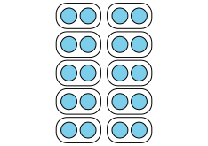

Sección Lección 3 - Dibujos de situaciones de división
Objetivos
Representemos situaciones de división con dibujos.
Subsección Calentamiento
Conversación numérica: Cuanto más cambien las cosas....
Encuentra mentalmente el valor de cada expresión.
\(\displaystyle 120 + 120\)
\(\displaystyle 121 + 119\)
\(\displaystyle 125 + 115\)
\(\displaystyle 129 + 111\)
Subsección Actividad 1
Grupos de estudiantes.
쯈ué observaste acerca de cómo los estudiantes se organizaron en grupos de 2?
쯈ué observaste acerca de cómo los estudiantes se organizaron en 2 grupos?
Subsección Actividad 2
Los lápices de colores de Elena.
Elena tiene 12 lápices de colores. Ella tiene 2 cajas y quiere poner el mismo número de lápices en cada caja. 쮺uántos lápices irán en cada caja?
쮺uál dibujo corresponde a la situación? Explica tu razonamiento.
A

B
Subsección Actividad 3
쮺uál dibujo corresponde?
Asocia cada situación con un dibujo. Prepárate para explicar tu razonamiento.
Mai tiene 8 marcadores y varias cajas. Ella pone 4 marcadores en cada caja. 쮺uántas cajas con marcadores hay?
Kiran tiene 20 bolígrafos y varias mesas. 칄l pone 2 bolígrafos en cada mesa. 쮼n cuántas mesas puede poner bolígrafos?
Lin tiene 8 lápices de colores. Ella los pone en 2 bolsas. En cada bolsa pone el mismo número de lápices de colores. 쮺uántos lápices de colores habrá en cada bolsa?
Priya tiene 15 crayones y varios pupitres. Ella pone 5 crayones en cada pupitre. 쮺uántos pupitres tendrán crayones?
Noah tiene 20 lápices y 10 cajas. 칄l pone el mismo número de lápices en cada caja. 쮺uántos lápices habrá en cada caja?
Jada tiene 15 marcadores y 3 mesas. Ella pone el mismo número de marcadores en cada mesa. 쮺uántos marcadores habrá en cada mesa?
A.
B. 
C. 
Subsección Resumen
Hoy asociamos dibujos con situaciones de división. Hay dos tipos de situaciones de división y hoy vimos que el mismo dibujo puede representar ambos tipos de situaciones.
Considera este grupo:
Mai tiene 8 marcadores y varias cajas. Ella pone 4 marcadores en cada caja. 쮺uántas cajas con marcadores hay?
Lin tiene 8 lápices de colores. Ella los pone en 2 bolsas. En cada bolsa pone el mismo número de lápices de colores. 쮺uántos lápices de colores habrá en cada bolsa?
쮼n qué se parecen y en qué se diferencian estas situaciones de división?
En la primera situación, debemos averiguar cuántos grupos hay. Sabemos que hay 4 marcadores en cada caja, pero no sabemos cuántas cajas hay. En la segunda situación, debemos averiguar cuántos hay en cada grupo. Sabemos que hay 2 bolsas, pero no sabemos cuántos lápices de colores hay en cada bolsa.
Ahora que estamos dividiendo, necesitamos un símbolo nuevo para escribir expresiones de división. Si queremos representar "8 dividido en grupos de 4", escribimos: \(8\div 4\text{.}\)
쯈ué expresión podríamos escribir para representar "8 dividido en 2 grupos"?
Subsección Actividad de cierre
Regalitos para invitados.
Clare tiene 48 marcadores. Ella pone 8 marcadores en cada bolsa de regalitos para su fiesta de cumplea침os. 쮺uántas bolsas usará?
쮺uál dibujo corresponde a la situación? Explica tu razonamiento.
A.
B.